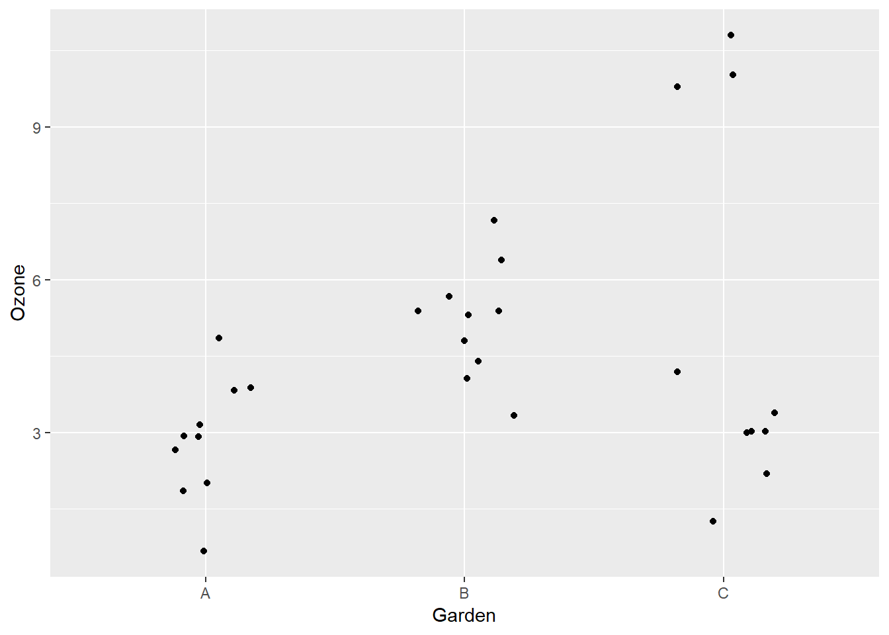

Tests d’hypothèse sur la moyenne
19 septembre 2018
1. Tests d’hypothèse
Lesquelles des affirmations suivantes sont exactes?
La valeur \(p\) est la probabilité que l’hypothèse nulle soit vraie.
Plus le seuil de signification \(\alpha\) est élevé, plus il est difficile de rejeter l’hypothèse nulle.
Pour un test \(t\) à un échantillon, si on rejette l’hypothèse nulle \(\mu = 10\) avec un seuil \(\alpha = 0.01\), alors l’intervalle de confiance à 99% de \(\bar{x}\) ne contient pas la valeur 10.
Pour le test \(t\) comparant deux échantillons avec l’hypothèse nulle \(\mu_A = \mu_B\), une valeur \(p\) plus petite signifie que la différence entre les moyennes est plus élevée.
Dans un plan d’expérience, l’assignation aléatoire des traitements vise à assurer que les différences mesurées entre les groupes soient bien dues au traitement.
(b), (c) et (e). L’affirmation (a) est incorrecte, car la valeur \(p\) est la probabilité d’obtenir une valeur de la statistique de test égale ou plus extrême que celle observée si l’hypothèse nulle est vraie. L’affirmation (d) est incorrecte, car la valeur \(p\) dépend non seulement de la taille de l’effet, mais aussi de la variance des données et de la taille de l’échantillon.
2. Concentration d’ozone dans trois jardins
Pour cet exercice, nous utiliserons le tableau de données gardens.csv, qui provient du manuel Statistics: An Introduction Using R de Michael Crawley. Ces données représentent les concentrations d’ozone (en parties par 100 millions ou pphm) mesurées dans trois jardins (A, B et C) lors de différentes journées.
gardens <- read.csv("gardens.csv")- Observez la distribution des mesures d’ozone dans chaque jardin. Quel type de graphique pourriez-vous utiliser?
Voici une option avec des boîtes à moustaches:
library(ggplot2)
ggplot(gardens, aes(x = Garden, y = Ozone)) +
geom_boxplot()
Voici les points individuels avec geom_jitter. il s’agit d’un geom_point qui espace les points aléatoirement sur l’axe des x pour différencier les points avec le même y:
ggplot(gardens, aes(x = Garden, y = Ozone)) +
geom_jitter(width = 0.2)
- Quelle est la moyenne et l’écart-type de la concentration d’ozone dans chaque jardin? Est-ce que la moyenne est une bonne indicatrice de la valeur “typique” dans chaque jardin?
library(dplyr)
group_by(gardens, Garden) %>%
summarize(mean(Ozone), sd(Ozone))## # A tibble: 3 x 3
## Garden `mean(Ozone)` `sd(Ozone)`
## <fct> <dbl> <dbl>
## 1 A 3 1.15
## 2 B 5 1.15
## 3 C 5 3.77Le jardin C a un écart-type beaucoup plus élevé. Mais surtout, la moyenne de 5 n’est pas une valeur typique, puisqu’on a 7 points entre 1 et 4, et 3 entre 10 et 11.
- À partir de ces données, testez l’hypothèse nulle selon laquelle les jardins A et B reçoivent la même concentration d’ozone en moyenne. Quel est votre estimé de la différence entre les moyennes et son intervalle de confiance à 99%? Est-ce que ce test donne une bonne idée de la différence entre les deux jardins? Expliquez votre réponse.
t.test(Ozone ~ Garden, data = filter(gardens, Garden != "C"),
conf.level = 0.99)##
## Welch Two Sample t-test
##
## data: Ozone by Garden
## t = -3.873, df = 18, p-value = 0.001115
## alternative hypothesis: true difference in means is not equal to 0
## 99 percent confidence interval:
## -3.4864203 -0.5135797
## sample estimates:
## mean in group A mean in group B
## 3 5L’estimé \(\mu_A - \mu_B\) est de -2 avec un intervalle de confiance (-3.5, -0.5). L’hypothèse nulle est rejetée.
Comme on a vu plus haut, les deux jardins ont une distribution semblable de concentration d’ozone, sauf que la moyenne du jardin B est plus élevé. Donc ici, le test \(t\) comparant les moyennes décrit bien la différence entre les deux.
- Répétez l’exercice précédent pour l’hypothèse nulle selon laquelle les jardins A et C reçoivent la même concentration d’ozone en moyenne. Commentez sur la différence entre ce résultat et le résultat précédent.
t.test(Ozone ~ Garden, data = filter(gardens, Garden != "B"),
conf.level = 0.99)##
## Welch Two Sample t-test
##
## data: Ozone by Garden
## t = -1.6036, df = 10.673, p-value = 0.138
## alternative hypothesis: true difference in means is not equal to 0
## 99 percent confidence interval:
## -5.897603 1.897603
## sample estimates:
## mean in group A mean in group C
## 3 5L’estimé \(\mu_A - \mu_C\) est de -2 avec un intervalle de confiance (-5.9, 1.9). L’hypothèse nulle n’est pas rejetée.
La différence entre les moyennes de A et C est la même que la différence entre les moyennes de A et B, mais le jardin C a une plus grande variance, ce qui explique pourquoi la différence n’est pas significative. Toutefois, comme nous avons vu plus tôt, la moyenne ne décrit pas bien les données du jardin C et la distribution est très loin d’être normale. Dans ce cas-ci, le test \(t\) n’est probablement pas une bonne façon de décrire la différence entre les groupes.
3. Afficher l’estimé d’un test t
On peut sauvegarder le résultat d’un test \(t\) dans une variable, par exemple:
res_t <- t.test(Ozone ~ Garden, data = filter(gardens, Garden != "C"),
conf.level = 0.99)Ensuite, on peut accéder aux différentes parties du résultat avec l’opérateur $.
res_t$p.value## [1] 0.001114539res_t$estimate## mean in group A mean in group B
## 3 5Créez une fonction qui accepte comme argument une variable de résultat d’un test \(t\) (réalisé sur 2 échantillons) et qui affiche l’estimé de la différence avec son intervalle de confiance. Arrondissez les nombres à une décimale. Par exemple, pour le résultat res_t ci-dessus, la fonction devrait produire le texte: “-2 (-3.5, -0.5)”.
Indices
Utilisez la fonction
roundpour arrondir une variable numérique.La fonction
paste0permet de coller ensemble des nombres et des chaînes de caractère. Par exemple:
t <- 6
paste0("Il est ", t, " heures.")## [1] "Il est 6 heures."Note: La fonction paste fonctionne de la même façon mais place des espaces entre les éléments.
Voici un exemple de solution:
afficher_confint <- function(result) {
estime <- round(result$estimate[1] - result$estimate[2], 1)
conf_min <- round(result$conf.int[1], 1)
conf_max <- round(result$conf.int[2], 1)
paste0(estime, " (", conf_min, ", ", conf_max, ")")
}
afficher_confint(res_t)## [1] "-2 (-3.5, -0.5)"4. Expérience avec groupes appariés
Donnez un exemple d’expérience dont les résultats pourraient être analysés avec un test \(t\) pour deux groupes appariés.